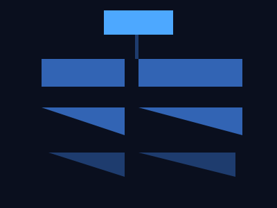

第五课
软件安装与系统注册表
安装一个软件时，系统到底做了什么？
安装的本质
安装一个软件不只是"把文件复制到硬盘"。它触发了操作系统多个子系统：
- 释放文件到目标目录（通常在
C:\Program Files） - 向注册表写入配置信息
- 注册文件关联（如 .txt 文件默认用记事本打开）
- 安装服务（Services）或自启项
- 写入开始菜单和快捷方式
安装程序（如 MSI 或 Setup.exe）本质上是一个"脚本执行器"，按照清单执行以上操作。
什么是注册表？
注册表是 Windows 的核心配置数据库，是一个树状结构的分层存储系统。

- HKEY_CLASSES_ROOT — 文件关联和 COM 组件注册
- HKEY_CURRENT_USER — 当前用户的设置
- HKEY_LOCAL_MACHINE — 系统级配置
- HKEY_CURRENT_CONFIG — 硬件配置文件
注册表项与值
注册表的每个节点叫项（Key），每个项下可以有值（Value）：
- 字符串值（REG_SZ）— 文本数据
- 二进制值（REG_BINARY）— 二进制数据
- DWORD 值（REG_DWORD）— 32 位整数
- 多字符串值（REG_MULTI_SZ）— 多行文本
- 可扩展字符串（REG_EXPAND_SZ）— 含环境变量的文本
按 Win + R，输入
regedit → 这就是注册表编辑器。
文件关联（File Association）
为什么双击 .txt 文件会自动用记事本打开？注册表里记录了：
.txt扩展名 → 关联到 txtfile 这个 ProgID- txtfile 的 shell/open/command →
C:\Windows\notepad.exe "%1" - 双击文件时，系统查注册表找到对应命令来执行
右键文件 → 打开方式 → 选择其他应用，就是在修改注册表中的文件关联。
服务（Services）
服务是后台运行的进程，不需要用户登录就能运行：
- 在系统启动时自动启动（或手动/延迟启动）
- 运行在 SYSTEM 账户或特定服务账户下，权限往往很高
- 没有用户界面，不需要登录就能跑
按 Win + R 输入
services.msc 打开服务管理器。里面每一行就是一个服务。
恶意软件常把自己注册为服务来持久化——即使没人登录也在运行。
自启与持久化
软件想让每次开机自动运行，有这些方式：
- 启动文件夹 —
shell:startup（当前用户） - 注册表 Run 项 —
HKCU\Software\Microsoft\Windows\CurrentVersion\Run - 计划任务（Task Scheduler）— 可设置触发条件
- 服务 — 设置为自动启动
- 驱动 — 最底层，在内核态加载
任务管理器 → 启动标签页，可以看到所有自启项。
总结
- 安装软件 = 解压文件 + 注册表配置 + 关联 + 服务 + 自启
- 注册表是树状配置数据库，regedit 可以查看
- 文件关联告诉 Windows 双击某后缀用什么程序打开
- 服务在后台运行，不需要用户登录
- 恶意软件通过 Run 项、服务、计划任务做持久化
- 卸载软件不只是删文件，要清理注册表和相关配置